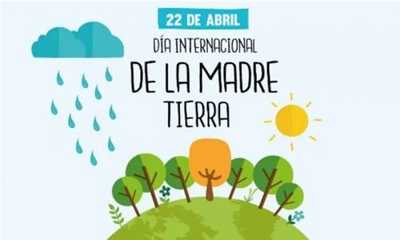
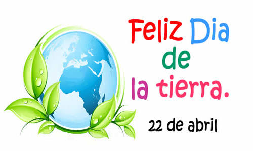
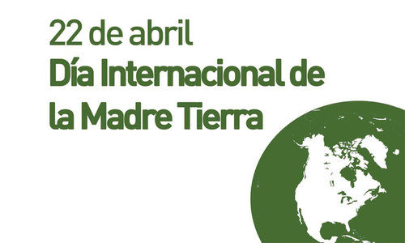
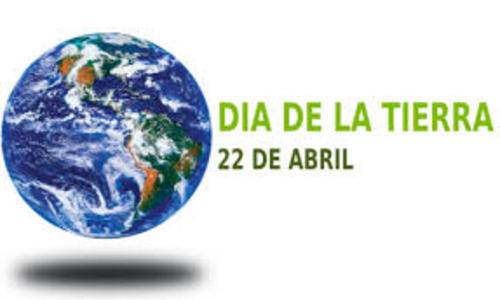
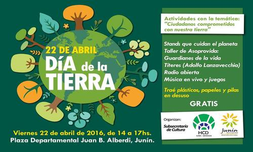
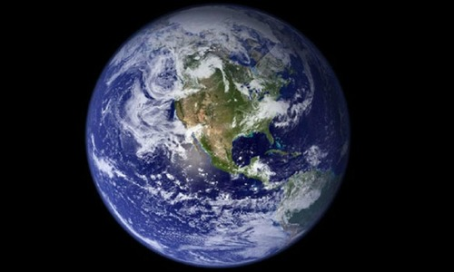
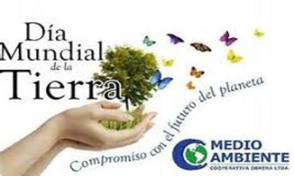
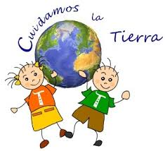

Día interncacional de la madre Tierra 22 de abril
- 
- 
- 
- 
- 
- 
- 

Realizado por:
sarahi coyotl coyotl
Cuarto Semestre Grupo "F"
Especialidad
Programación
Submodulo
Desarrolla Aplicaciones Móviles
Docente
Lic. Jose Antonio Gómez Hernández
Cuarto Semestre Grupo "F"
Programación
Desarrolla Aplicaciones Móviles
Lic. Jose Antonio Gómez Hernández
Celebramos el Día Internacional de la Madre Tierra para recordar que el planeta y sus ecosistemas nos dan la vida y el sustento. Con este día, asumimos, ademas, la responsabilidad colectiva, como nos recordaba la Declaración de Río de 1992, de fomentar esta armonía con la naturaleza y la Madre Tierra. Este dia nos brinda tambien la oportunidad de concienciar a todos los habitantes del planeta acerca de los problemas que afectan a la tierra y a las diferentes formas de vida que en él se desarrollan.
Desde el año de 1962, el Senador y activista Gaylord Nelson venía preparando el espacio para que el tema ambiental hiciera parte de la agenda gubernamental en los Estados Unidos, En ese tiempo, los activistas y grupos ecológicos eran considerados excluidos y no se les daba ninguna importancia.
En 1969 finalmente pudo convocar una gran cantidad de personas con el fin de pedir la inclusión del tema ambiental en la agenda del Congreso de los Estados Unidos.
Después de casi diez años de lucha ante el gobierno, el Senador Gaylord Nelson logró que se estableciera el 22 de abril como Día Mundial de la Tierra en el año de 1970. En esta fecha ocurrió la primera celebración la cual tuvo un impacto tan grande que se congregaron dos mil universidades, mil escuelas (primarias y secundarias), más de veinte millones de personas y centenares de comunidades en diferentes marchas. La presión social tuvo sus logros y el gobierno de los Estados Unidos creó la “Agencia de Protección Ambiental” con una serie de leyes destinadas a la protección del medio ambiente, relacionadas con el aire limpio, el agua limpia y la conservación de especies en vía de extinción. A partir de entonces, cada año en esta fecha, el mundo entero reflexiona y se moviliza por una tierra mejor.
"Madre Tierra" es una expresión común utilizada para referirse al Planeta Tierra en diversos países y regiones, lo que demuestra la interdependencia existente entre los seres humanos, las demás especies vivas y el planeta que todos habitamos.
La Tierra y sus ecosistemas son nuestro hogar. Para alcanzar un justo equilibrio entre las necesidades económicas, sociales y ambientales de las generaciones presentes y futuras, es necesario promover la armonía con la naturaleza y el planeta.
Celebramos el Día Internacional de la Madre Tierra para recordar que el planeta y sus ecosistemas nos dan la vida y el sustento. Con este día, asumimos, además, la responsabilidad colectiva, como nos recordaba la Declaración de Río de 1992, de fomentar esta armonía con la naturaleza y la Madre Tierra.

Este año, el organismo internacional celebra el octavo Diálogo sobre armonía con la naturaleza. El 23 de abril en la sede de la ONU de Nueva York se acogerá este encuentro con el que tratarán temas como la producción sostenible y los patrones de consumo en la armonía con la naturaleza. Mediante el diálogo quieren fomentar que los ciudadanos y las sociedades se conciencien sobre cómo se relacionan y cómo pueden relacionarse con el mundo natural. Al mismo tiempo, pretende mejorar los cimientos éticos de la relación entre la humanidad y la Tierra, en términos de desarrollo sostenible.
En la Declaración de Río de 1992 ya marcaron que un objetivo que deberíamos seguir es el de fomentar esta armonía con la naturaleza y la Madre Tierra. Para alcanzar un justo equilibrio entre las necesidades económicas, sociales y ambientales de las generaciones presentes y futuras, es necesario promover dicha armonía.
La Asamblea General designa el 22 de abril como el Día Internacional de la Madre Tierra, teniendo en cuenta que en muchos países se celebra el día de la Tierra, y con el objetivo de alcanzar un justo equilibrio entre las necesidades económicas, las sociales y las ambientales de las generaciones presentes y futuras, y para promover la armonía con la naturaleza y la Tierra.
Invita a todos los Estados Miembros, las organizaciones del sistema de las Naciones Unidas, las organizaciones internacionales, regionales y subregionales, la sociedad civil, las organizaciones no gubernamentales y las partes interesadas a observar el Día Internacional de la Madre Tierra y crear conciencia al respecto, según proceda.
La Conferencia de las Naciones Unidas sobre el Medio Humano de 1972 celebrada en Estocolmo sentó las bases de la toma de conciencia mundial sobre la relación de interdependencia entre los seres humanos, otros seres vivos y nuestro planeta. Asimismo, se estableció el 5 de junio como el Día Mundial del Medio Ambiente y se creó el Programa de las Naciones Unidas para el Medio Ambiente la agencia de la ONU encargada de establecer la agenda ambiental a nivel global, promover la implementación coherente de la dimensión ambiental del desarrollo sostenible en el sistema de las Naciones Unidas y actuar como un defensor autorizado del medio ambiente.